PAGA plot
Usage
PAGAPlot(
srt,
paga = srt@misc$paga,
type = "connectivities",
reduction = NULL,
dims = c(1, 2),
cells = NULL,
show_transition = FALSE,
node_palette = "Paired",
node_palcolor = NULL,
node_size = 4,
node_alpha = 1,
node_highlight = NULL,
node_highlight_color = "red",
label = FALSE,
label.size = 3.5,
label.fg = "white",
label.bg = "black",
label.bg.r = 0.1,
label_insitu = FALSE,
label_repel = FALSE,
label_repulsion = 20,
label_point_size = 1,
label_point_color = "black",
label_segment_color = "black",
edge_threshold = 0.01,
edge_line = c("straight", "curved"),
edge_line_curvature = 0.3,
edge_line_angle = 90,
edge_size = c(0.2, 1),
edge_color = "grey40",
edge_alpha = 0.5,
edge_shorten = 0,
edge_offset = 0,
edge_highlight = NULL,
edge_highlight_color = "red",
transition_threshold = 0.01,
transition_line = c("straight", "curved"),
transition_line_curvature = 0.3,
transition_line_angle = 90,
transition_size = c(0.2, 1),
transition_color = "black",
transition_alpha = 1,
transition_arrow_type = "closed",
transition_arrow_angle = 20,
transition_arrow_length = unit(0.02, "npc"),
transition_shorten = 0.05,
transition_offset = 0,
transition_highlight = NULL,
transition_highlight_color = "red",
aspect.ratio = 1,
title = "PAGA",
subtitle = NULL,
xlab = NULL,
ylab = NULL,
legend.position = "right",
legend.direction = "vertical",
theme_use = "theme_scp",
theme_args = list(),
return_layer = FALSE
)Examples
data("pancreas_sub")
pancreas_sub <- RunPAGA(srt = pancreas_sub, group_by = "SubCellType", linear_reduction = "PCA", nonlinear_reduction = "UMAP", return_seurat = TRUE)
#> 'misc' slot is not converted.
#> 'tools' slot is not converted.
#> Warning: 'uns: neighbors' will not be converted. You may need to convert it manually.
PAGAPlot(pancreas_sub)
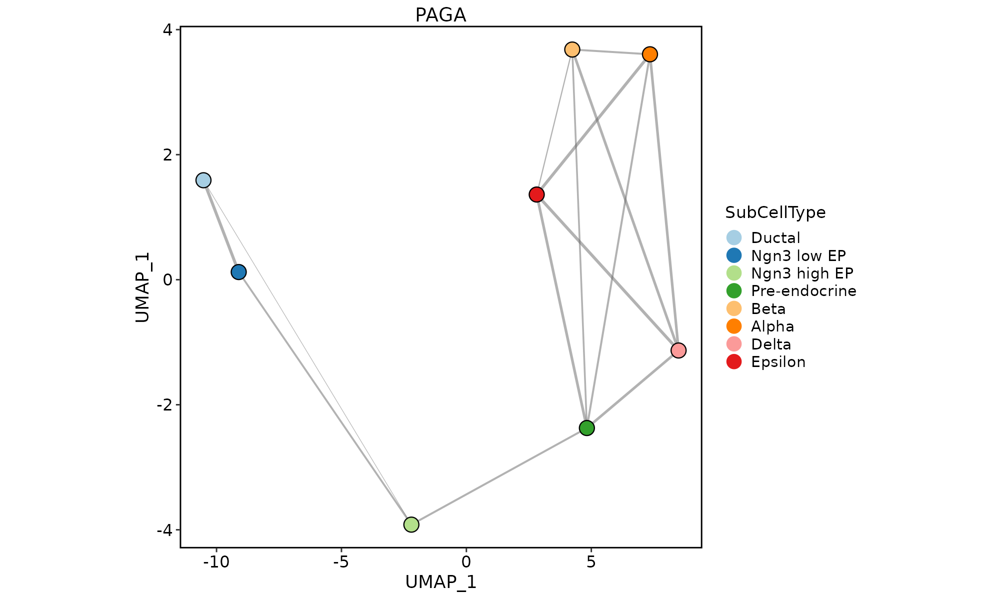
PAGAPlot(pancreas_sub, type = "connectivities_tree")
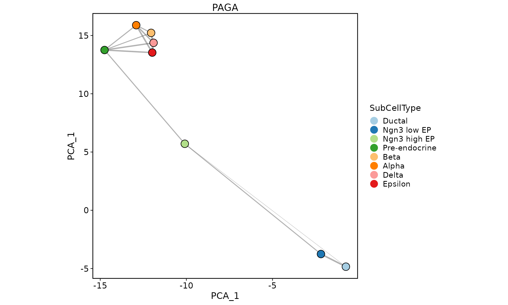
PAGAPlot(pancreas_sub, reduction = "PCA")
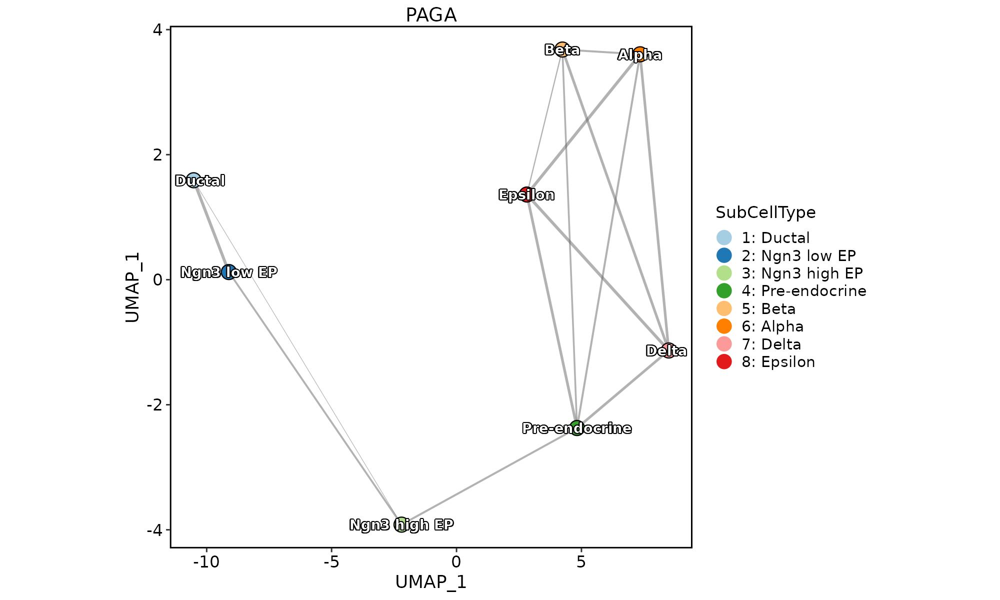
PAGAPlot(pancreas_sub, reduction = "PAGAUMAP2D")
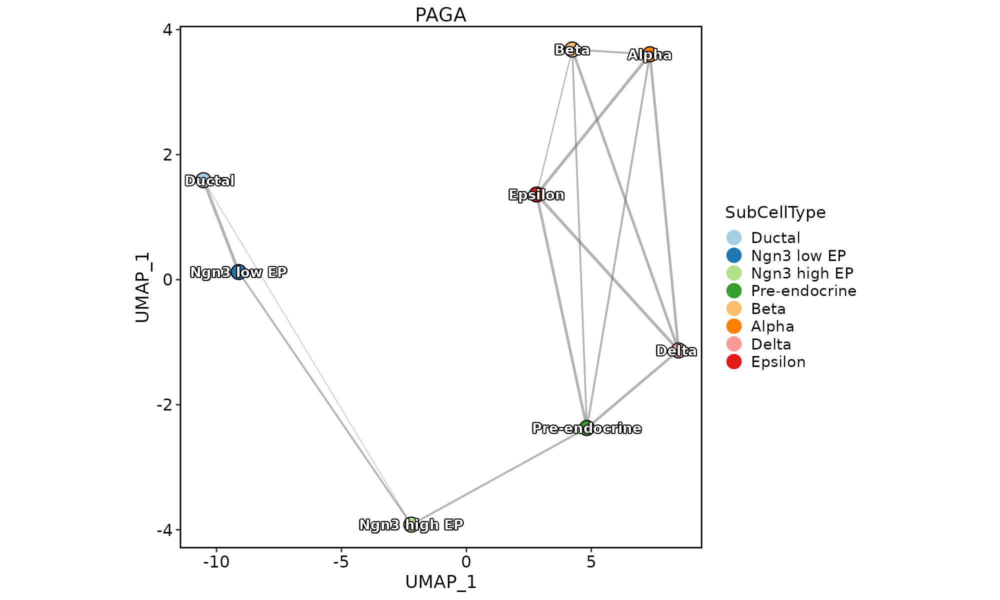
PAGAPlot(pancreas_sub, label = TRUE)
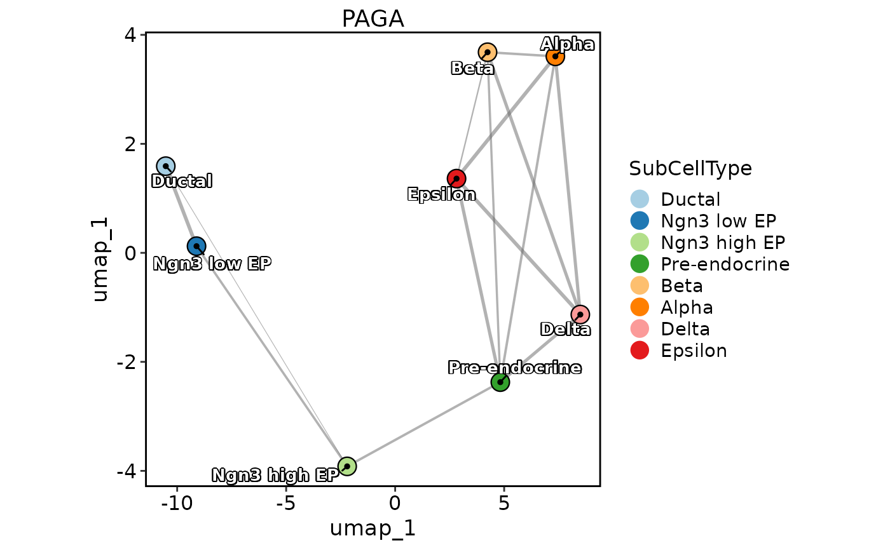
PAGAPlot(pancreas_sub, label = TRUE, label_insitu = TRUE)
 PAGAPlot(pancreas_sub, label = TRUE, label_insitu = TRUE, label_repel = TRUE)
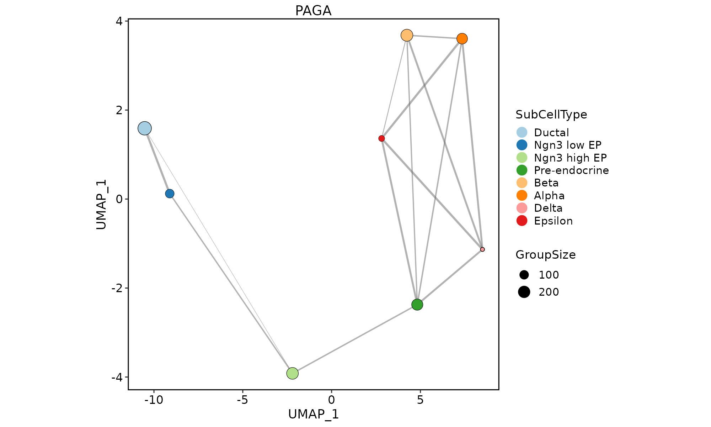
PAGAPlot(pancreas_sub, edge_line = "curved")
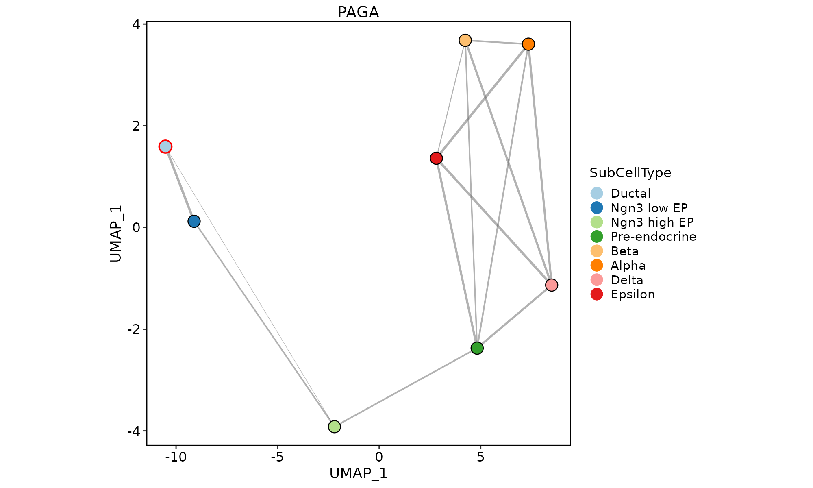
PAGAPlot(pancreas_sub, node_size = "GroupSize")
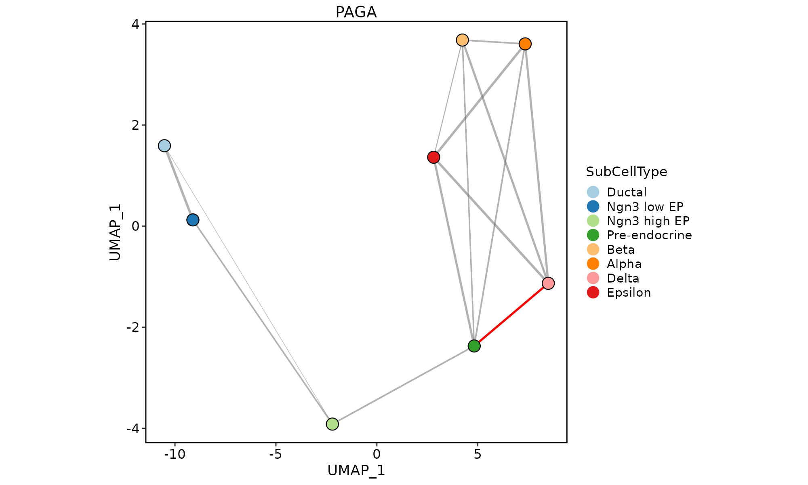
PAGAPlot(pancreas_sub, node_highlight = "Ductal")
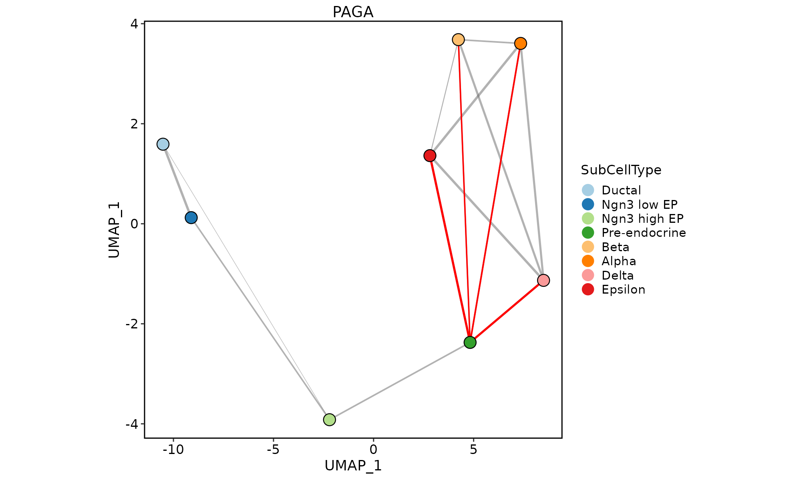
PAGAPlot(pancreas_sub, edge_highlight = paste("Pre-endocrine", levels(pancreas_sub$SubCellType), sep = "-"))
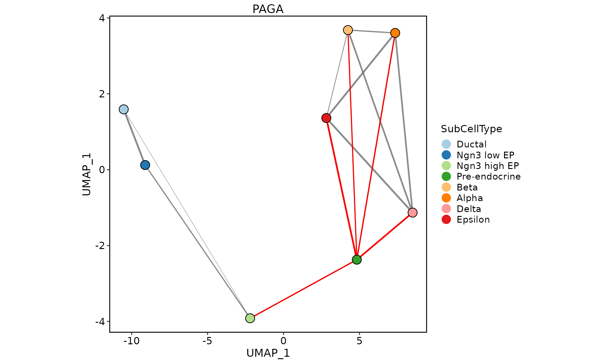
pancreas_sub <- RunSCVELO(srt = pancreas_sub, group_by = "SubCellType", linear_reduction = "PCA", nonlinear_reduction = "UMAP", return_seurat = TRUE)
#> 'misc' slot is not converted.
#> 'tools' slot is not converted.
#> Warning: Keys should be one or more alphanumeric characters followed by an underscore, setting key from variance_stochastic_ to variancestochastic_
#> Warning: Keys should be one or more alphanumeric characters followed by an underscore, setting key from variance_velocity_ to variancevelocity_
#> Warning: 'uns: neighbors' will not be converted. You may need to convert it manually.
PAGAPlot(pancreas_sub, show_transition = TRUE)
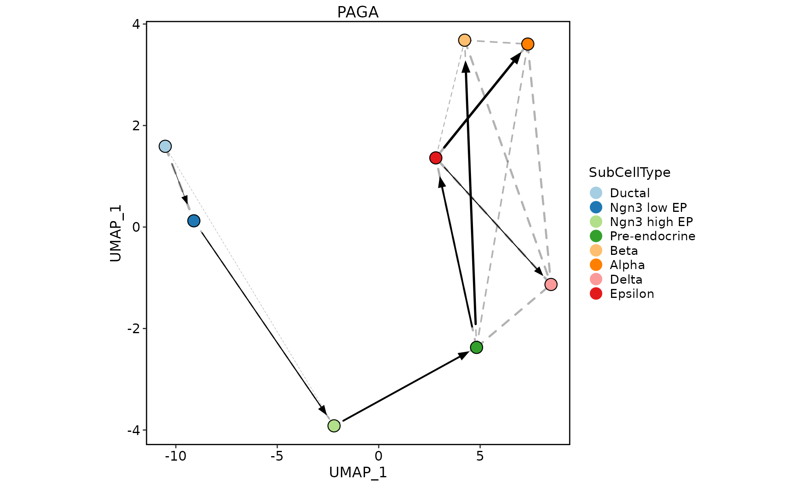
PAGAPlot(pancreas_sub, label = TRUE, label_insitu = TRUE, label_repel = TRUE)
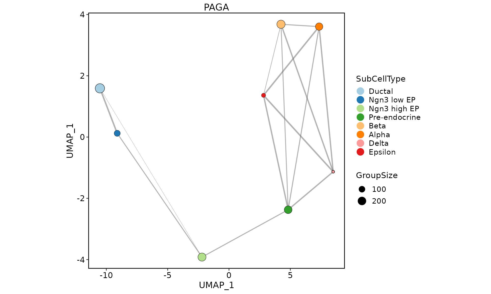
PAGAPlot(pancreas_sub, edge_line = "curved")
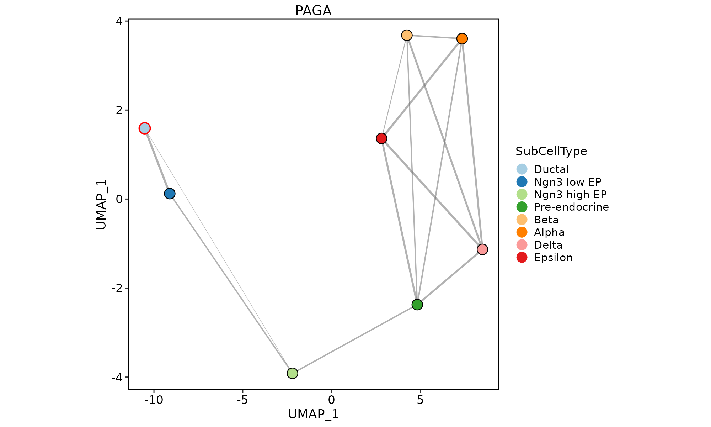
PAGAPlot(pancreas_sub, node_size = "GroupSize")
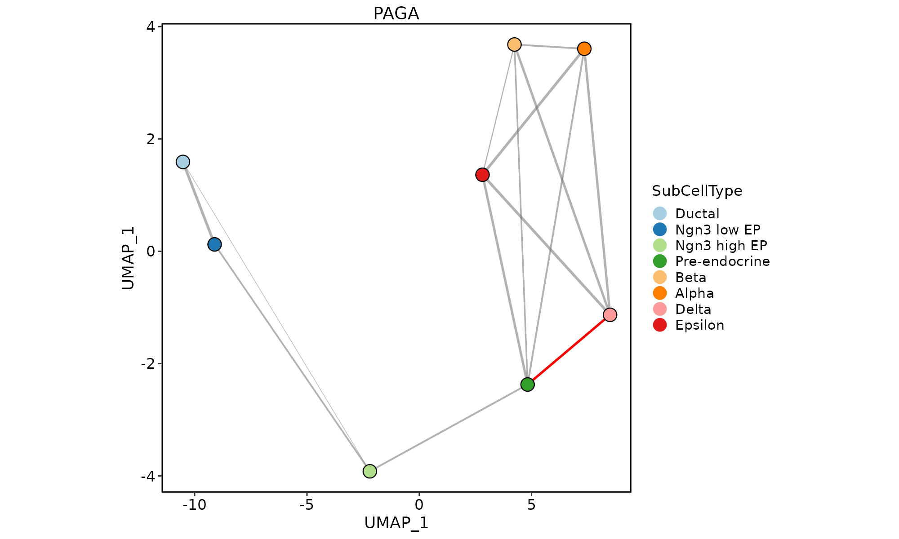
PAGAPlot(pancreas_sub, node_highlight = "Ductal")
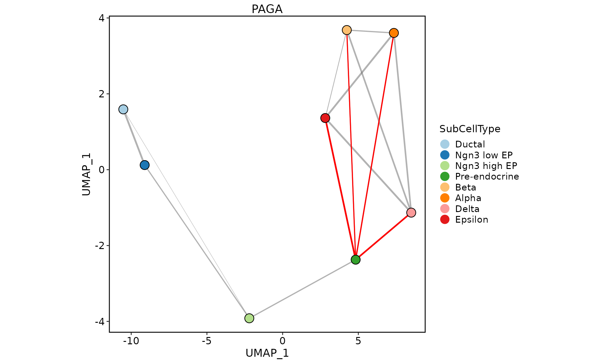
PAGAPlot(pancreas_sub, edge_highlight = paste("Pre-endocrine", levels(pancreas_sub$SubCellType), sep = "-"))
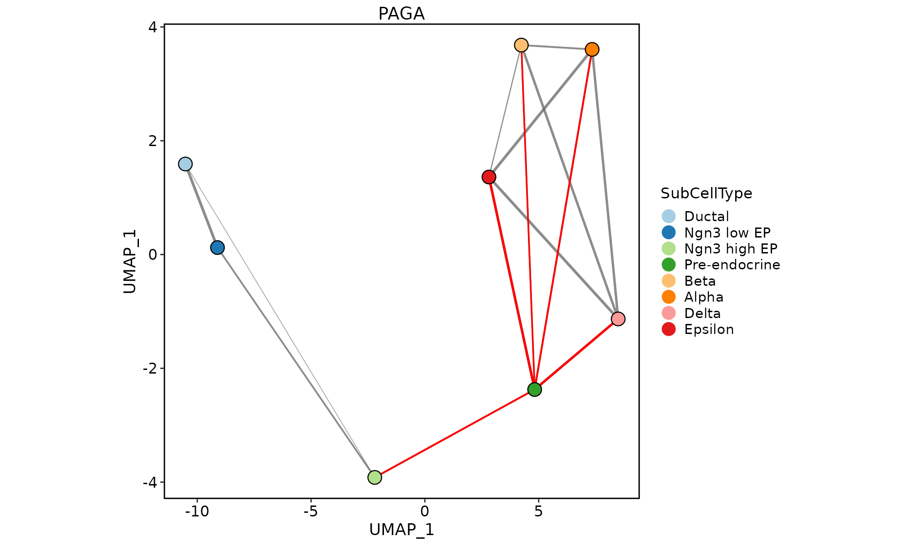
pancreas_sub <- RunSCVELO(srt = pancreas_sub, group_by = "SubCellType", linear_reduction = "PCA", nonlinear_reduction = "UMAP", return_seurat = TRUE)
#> 'misc' slot is not converted.
#> 'tools' slot is not converted.
#> Warning: Keys should be one or more alphanumeric characters followed by an underscore, setting key from variance_stochastic_ to variancestochastic_
#> Warning: Keys should be one or more alphanumeric characters followed by an underscore, setting key from variance_velocity_ to variancevelocity_
#> Warning: 'uns: neighbors' will not be converted. You may need to convert it manually.
PAGAPlot(pancreas_sub, show_transition = TRUE)
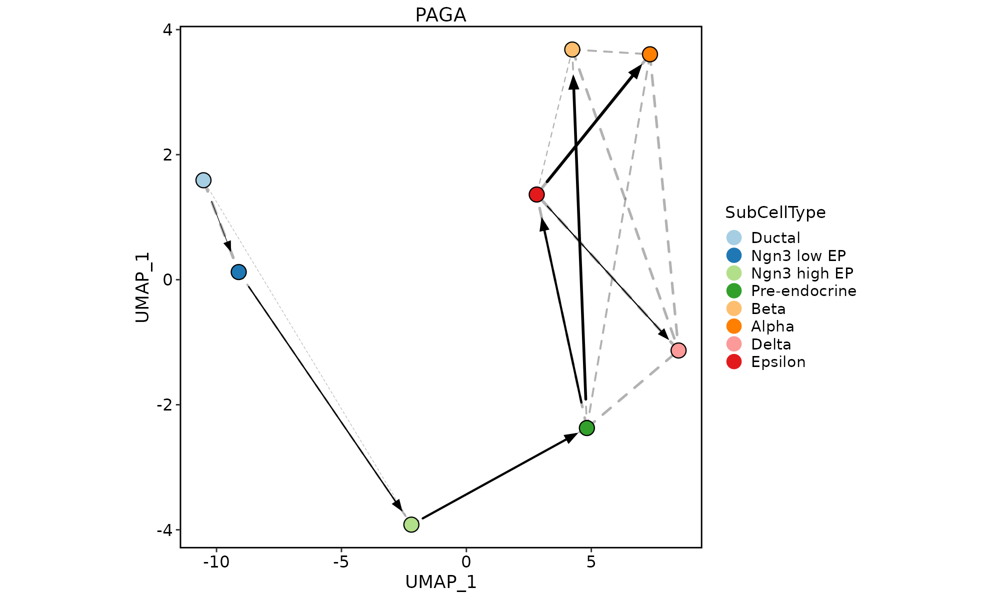